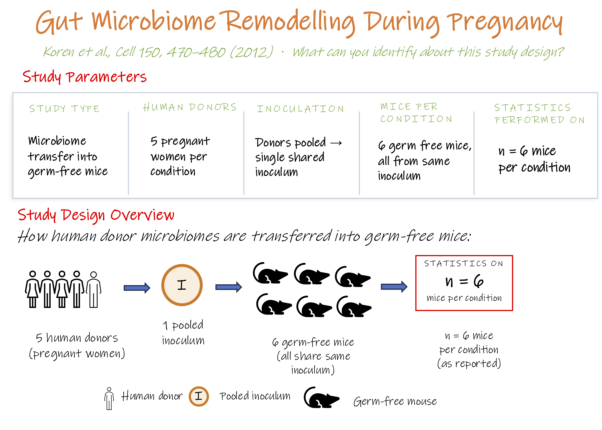

Module 1.2: Activity
Analyse this study design
Study design
For the mouse transplantation experiment in a 2012 study, researchers used stool samples from the same five women in early pregnancy (T1) and late pregnancy (T3).
They combined the samples into one mixture per trimester and gave each mixture to germ-free mice.
The fat-gain analysis included six mice receiving the T1 mixture and five receiving the T3 mixture, after one T3 mouse was excluded as an outlier.
Research question
Does gut microbiota from late pregnancy cause greater fat gain in mice than microbiota from early pregnancy, and does this effect hold across different women?

Ref: Koren et al., Cell 150, 470–480 (2012), Figure 6C
Discuss in your group
- Can this design show that the effect holds across different women?
- Do mice receiving the same mixture count as independent donor replicates?
- For this research question, should n count the mice or the donor pools?
- Can reanalysis fix the missing donor replication, or are new experiments needed?